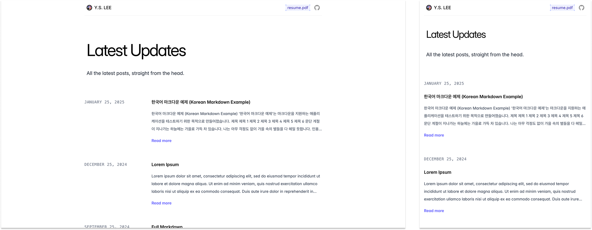
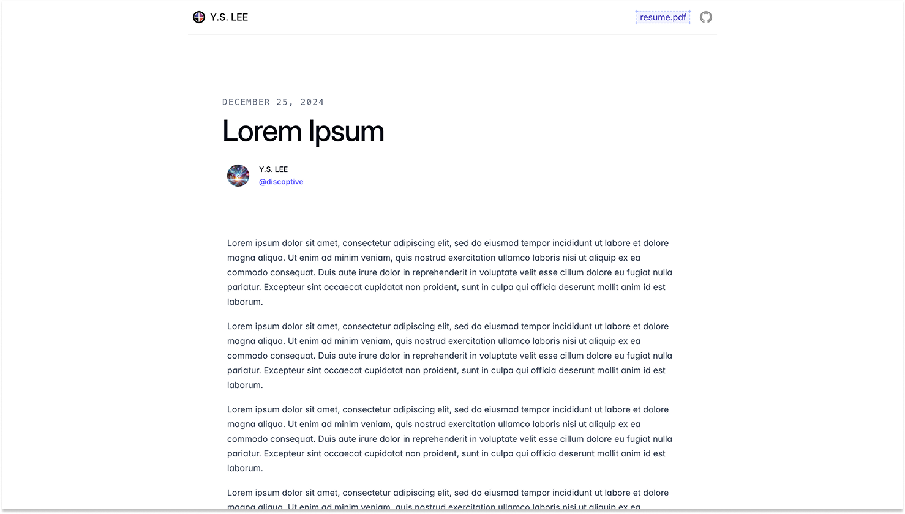

- Published on
About minimic-discaptive
- Authors
-
-

- Name
- nenjotsu
-
Table of Contents
Minimic Discaptive
This project is a simple static site generator designed to convert Markdown-based posts into static HTML pages. It reads content from a directory, processes the data, and generates a fully static website with an index page, individual post pages, and a sitemap.
Overview
Live: discaptive.com
 
Features
- Markdown to HTML Conversion: The site generator reads
.mdfiles from thecontentdirectory and converts them into static HTML pages. - Template Rendering: Uses HTML templates for consistent layout across pages. Templates include a
header,footer, andlayoutamong others. - Post Previews: On the index page, posts are displayed with a title, date, and a preview of the content.
- Post Detail Pages: Each post has a dedicated page with full content.
- Sitemap Generation: Generates a sitemap for search engine indexing.
- Customizable Configuration: Site information like name, GitHub URL, and Giscus integration can be customized via a
config.yamlfile.
Project Structure
├── content/ # Directory for blog posts (Markdown files)
│ ├── [post-slug]/image.png
│ └── [post-slug]/index.md
├── public/ # Generated static site files (HTML, assets)
├── templates/ # HTML templates for rendering pages
│ ├── layout.html
│ ├── header.html
│ ├── footer.html
│ ├── ...
│ └── ...
├── config.yaml # Configuration file for site settings
├── build.js # Main script for generating the site
└── package.json # Node.js dependencies and scripts
Configuration
The config.yaml file allows you to customize various aspects of the site, such as:
base: The base URL for your site.
name: The name of your blog or site.
github: The GitHub username.
giscus: Configuration for embedding Giscus comments in posts (requires setting up Giscus).
Example of config.yaml
base: https://myblog.com
name: My Blog
github: github-username
giscus:
repo: "username/repository"
repoId: "repository-id"
category: "General"
categoryId: "category-id"
mapping: "pathname"
reactionsEnabled: "1"
inputPosition: "bottom"
theme: "light"
lang: "en"
How to Use
1. Install Dependencies
Before running the static site generator, install the necessary dependencies:
npm install
2. Prepare Your Content
Place your blog posts in the content/ directory. Each post should be a directory named after its slug, containing an index.md file with front-matter metadata and the content in Markdown format.
Example of content/first-post/index.md
---
title: "My First Post"
date: "2025-03-19"
---
This is the content of my first post. It's written in Markdown.
3. Customize the Templates
Edit the HTML files in the templates/ directory to fit your design needs. The templates are:
layout.html: The main layout for the pages (includes header, footer, and content).header.html: The header section of the site (can include site name, navigation, etc.).footer.html: The footer section of the site (can include copyright, social links, etc.).post-list.html: Template for displaying a list of posts.post-item.html: Template for individual post previews on the index page.post-detail.html: Template for individual post pages.
4. Run the Generator
Once your content and templates are ready, run the site generator.
npm run build
This will:
- Generate
styles/output.cssthrough the @tailwindcss/cli based ontemplates/input.css. - Read all the
.mdfiles in thecontent/directory. - Generate static HTML files for each post in the
public/directory. - Create an
index.htmlfile listing all the posts. - Copy over any non-Markdown assets like images into the
public/directory. - Generate a
sitemap.xmlfor search engine indexing.
5. Others
You can view the site live locally by running npm run dev.
License
MIT Licensed, see LICENSE.